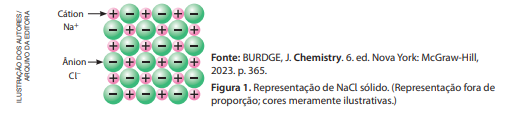
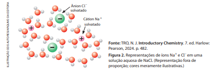
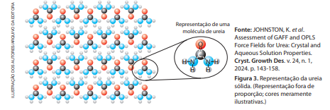
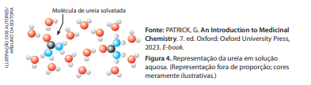
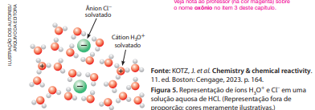
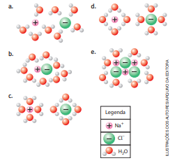

1. Compostos Inorgânicas
A água é uma substância inorgânica que, no estado de agregação líquido, está presente em to‑ dos os seres vivos. Entre outras funções relevantes, esse líquido dissolve substâncias relacionadas ao funcionamento saudável de diferentes organismos. Quando dizemos que uma substância está dissol‑ vida em outra, estamos afirmando que elas formam uma mistura com uma única fase, denominada mistura homogênea ou solução. Se a substância estiver dissolvida em água, dizemos que se trata de uma solução aquosa.
Na natureza, por exemplo, a dissolução de substâncias na água é importante para fornecer nutrientes a alguns tipos de plantas aquáticas, cujas raízes são encontradas na água. Na agricultura, essa capacidade da água é fundamental para todos os modos de plantio, inclusive para a cultura hidropônica, forma de cultivo realizada sem solo. Nessa cultura, as plantas são posicionadas em tubos, com as raízes voltadas para o interior deles, por onde flui, periodicamente, uma solução aquosa contendo íons para a nutrição vegetal, entre eles nitrato (NO3 – ), fosfato (PO4 3– ), potássio (K+ ), magnésio (Mg2+ ), cálcio (Ca2+ ) e sulfato (SO4 2– ).
Várias são as vantagens da cultura hidropônica em relação à que utiliza o solo. Como ela está asso‑ ciada a um sistema de cultivo em ambiente protegido, a água fornecida às plantas na forma de solução nutritiva pode ser reutilizada várias vezes, evitando desperdício. Esse ambiente protegido permite redu‑ ção ou eliminação do uso de agrotóxicos, em função da barreira física que impede a entrada de pragas. A produção fora de época é outra vantagem desse tipo de cultura, pois o controle de parâmetros sazonais, como luminosidade, temperatura e disponibilidade de nutrientes, permite que os cultivos ocorram em diferentes períodos ao longo do ano.
Neste capítulo, estudaremos que soluções aquosas com íons livres em sua composição, como a solução nutritiva da cultura hidropônica, denominadas soluções eletrolíticas, podem ter características diferenciadas que dependem das substâncias que nelas foram dissolvidas.
2. Dissociação iônica e ionização
O cloreto de sódio, NaCl, é um composto constituído de íons (composto iônico), sólido nas condições ambientes de temperatura e pressão (25 °C e 1 atm). Os íons presentes nessa substância constituem um arranjo organizado, o retículo cristalino iônico (Fig. 1).

Quando o cloreto de sódio é dissolvido em água, os íons são separados devido às atrações eletros‑ táticas entre eles e as moléculas de água (comentadas logo a seguir), desfazendo ‑se o retículo cristalino iônico. Tanto os cátions (íons positivos) como os ânions (íons negativos) passam a estar rodeados de moléculas de água (Fig. 2) e, nessa situação, dizemos que tais íons estão solvatados.

A separação dos íons de uma substância iônica que acontece quando ela se dissolve em água é
chamada dissociação iônica e pode ser representada por uma equação química. No caso do NaCl, a
equação química é:
NaCl (s) H 2 O ⎯→ Na + (aq) + Cl
–
(aq)
Essa equação pode ser interpretada como: cloreto de sódio sólido, ao se dissolver em água, dissocia‑ ‑se em cátions Na+ aquosos e ânions Cl – aquosos.
A molécula de água apresenta um dipolo elétrico (Capítulo 6). Assim, o oxigênio, que contém a carga parcial negativa nessa molécula, atrai os cátions do sal. Já o hidrogênio, que contém a carga parcial posi‑ tiva, atrai os ânions. As atrações eletrostáticas entre os íons e os polos das moléculas de água com carga de sinal oposta à deles, denominadas interações (ou forças) íon ‑dipolo, são um dos fatores responsáveis pela dissociação iônica. Essas interações também acarretam o arranjo das moléculas de água ao redor de cada íon solvatado pela água (Fig. 2).
Um material pode conduzir corrente elétrica desde que apresente partículas eletricamente carregadas e dotadas de mobilidade. A solução aquosa de NaCl possui íons livres, Na+ (aq) e Cl – (aq), e isso explica o fato experimental de ela conduzir corrente elétrica. Misturas homogêneas condutoras de corrente são chamadas de soluções eletrolíticas.
A ureia, CH4N2O ou (NH2)2CO, é uma substância molecular, sólida a 25 °C e 1 atm, bastante solúvel em água. Quando a ureia está sólida, suas moléculas estão organizadas em um retículo cristalino molecular (Fig. 3) com ligações de hidrogênio entre o átomo de oxigênio de uma molécula e o átomo de hidrogênio que esteja ligado ao nitrogênio em outra molécula.

Quando a ureia é dissolvida em água, suas moléculas são separadas (em razão das intensas interações intermoleculares estabelecidas com as moléculas de água) e solvatadas (Fig. 4). A solvatação se deve às ligações de hidrogênio estabelecidas entre ureia e água, particularmente entre os átomos de hidrogênio (H) da água e o átomo de oxigênio (O) da ureia e entre os átomos de H da ureia e o átomo de O da água. Observe a esque‑ matização (Fig. 4) que representa a disposição das moléculas de água ao redor de cada molécula solvatada.

A dissolução da ureia em água é representada pela equação química a seguir.
CH 4N 2O (s) H 2O ⎯→ CH 4N 2O (aq)
Nesse caso, não há íons em solução, e isso explica por que a mistura homogênea de ureia e água
(solução aquosa de ureia) não conduz corrente elétrica.
A substância cloreto de hidrogênio, HCl, gasosa a 25 °C e 1 atm, por sua vez, é molecular, bastante
solúvel em água e reage com ela produzindo íons, que são solvatados pela água (Fig. 5). A equação
química desse processo é:
HCl (g) + H2O (l) H3O+ (aq) + Cl − (aq)

Esse fenômeno recebe o nome de ionização, pois envolve a formação de íons. Também pode ser
chamado de dissociação (mas, nesse caso, sem o adjetivo iônica).
A ligação covalente H ⏤ Cl é rom‑
pida e o par de elétrons anteriormente compartilhado permanece agora com o átomo de cloro, mais
eletronegativo, que se transforma em ânion Cl
−
. O hidrogênio transforma ‑se em cátion H+
e liga ‑se
a uma molécula de água, formando o cátion H3O+
. A solução aquosa contém íons e é condutora de
corrente elétrica. É comum os químicos representarem, resumidamente, a ionização do HCl com a
equação química a seguir.
HCl (g) H 2O ⎯→ H + (aq) + Cl – (aq)
É importante ter em mente que o H+ (aq) não tem existência individual, mas liga ‑se à água, cons‑ tituindo cátion denominado oxônio, H3O+ (aq).
Exercícios
1. As interações íon ‑dipolo têm papel relevante na formação de uma solução aquosa do composto iônico brometo de potássio (KBr). Esclareça esse papel e represente, esque‑ maticamente, a disposição das moléculas que solvatam cada íon.
2. Um dos fatores responsáveis pela solubilização da ureia em água são as diversas ligações estabelecidas entre suas moléculas e as de água. Explique que ligações são essas e represente ‑as, empregando fórmulas estruturais das moléculas envolvidas.
3. Em uma solução aquosa de brometo de hidrogênio (HBr), as interações entre ânions Br– e as moléculas que o solvatam são de tipo diferente das que ocorrem entre cátions H3O+ e as moléculas que o solvatam. Elaborando esquemas representativos apropriados, explique essa diferença.
4. Durante uma pesquisa, um grupo de estudantes verificou que os processos que ocorrem quando etanol líquido (I), glicose sólida (II), ácido acético líquido (III), amônia gaso‑ sa (IV) e brometo de potássio sólido (V) se dissolvem em água são assim equacionados:- I. C2H5OH (l) → C2H5OH (aq)
- II. C6H12O6 (s) → C6H12O6 (aq)
- III. CH3COOH (l) + H2O (l) → H3O+ (aq) + CH3COO– (aq)
- IV. NH3 (g) + H2O (l) → NH4 + (aq) + OH– (aq)
- V. KBr (s) → K+ (aq) + Br– (aq)
- a. Esclareça quais das soluções aquosas obtidas podem
ser consideradas eletrolíticas e justifique.
- b. Algum dos processos é dissociação iônica? E ionização? Sustente com argumentação adequada.
5. (Fuvest‑SP) Entre as figuras a seguir, a que melhor repre‑ senta a distribuição das partículas de soluto e de solvente, numa solução aquosa diluída de cloreto de sódio, é:
